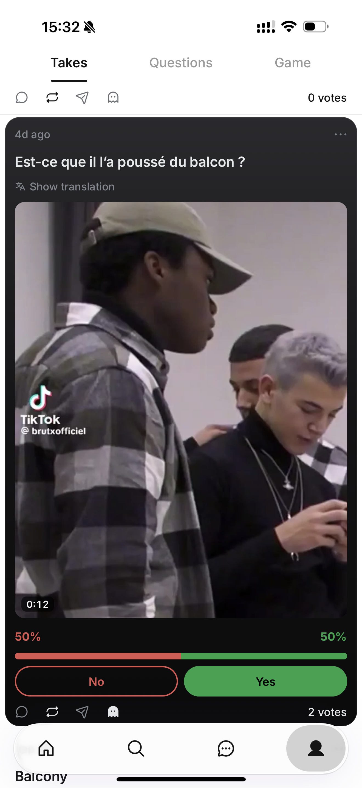
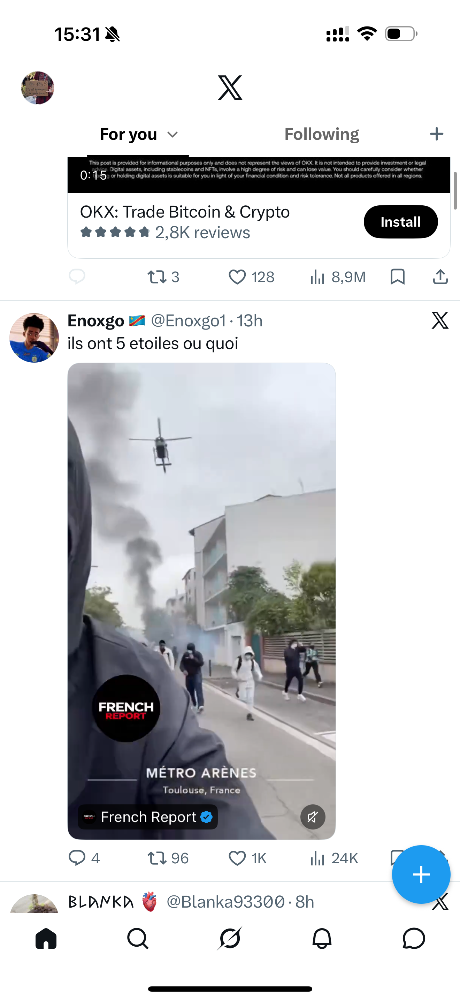
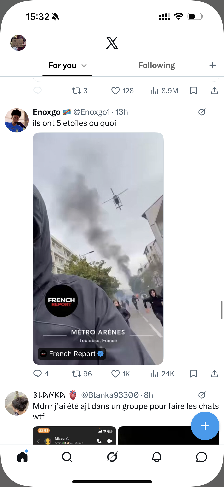
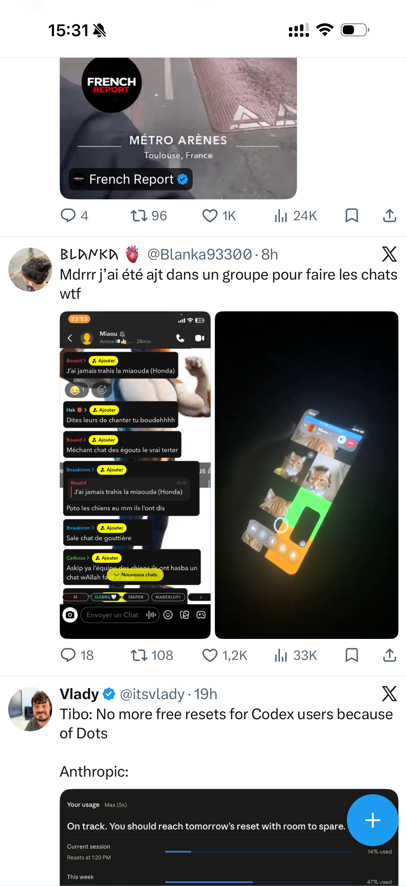

La vidéo peut prendre moins de place.
Tu trouvais le format de X plus discret. Voici des choix indépendants pour la taille, le cadrage, les contrôles et la lecture. Chaque proposition est posée sur une vraie capture de Take ; seul le rectangle vidéo est redessiné.
Largeur mesurée sur un écran de 440 pt. Un exemple, pas une règle de produit.
Les captures côte à côte
Les quatre images viennent d'Adam. L'exemple X à deux médias rappelle qu'une carte peut aussi prendre toute la colonne selon le contenu.




Les dimensions sont relevées sur ces captures à 3× (1320 px ÷ 3 = 440 pt). Elles ne décrivent ni tous les posts X ni une contrainte imposée par X.
Ta combinaison, sur trois fonds Take
Le même choix en clair, en sombre et dans la carte anonyme sombre d'Adam.
Le fichier vidéo d'origine n'est pas fourni. La proposition 9:16 simule un recadrage central depuis l'image 4:5 visible dans la capture Take ; le contenu hors de cette image ne peut pas être inventé.
Huit décisions, une réponse courte.
Choisis un numéro par ligne, par exemple A3 + B3 + C1 + D1 + E2 + F2 + G1 + H1. Les cartes comparent un seul paramètre à la fois ; la bande au-dessus retient tes choix.
Quelle largeur ?
Même image en 4:5, même alignement à gauche. La largeur est relative à l'espace média de Take, pas à tout l'écran.
Jusqu'où peut-elle monter ?
Largeur maximale de 80 % et ratio 9:16. Quand le plafond est atteint, la largeur rétrécit aussi pour garder les proportions.
Quel ratio dans la carte ?
Largeur 65 %, hauteur maximale 460 pt. « Original » garderait le ratio du vrai fichier ; ici l'aperçu 9:16 reste une simulation.
Dans l'axe du texte ou au centre ?
Deux positions pour la même carte 65 % en portrait. Sur X, la vidéo d'Adam commence à l'aplomb du texte du post.
Quel arrondi ?
Le même cadre, avec trois rayons de coin. Les coins de X sont ici une observation visuelle, pas une valeur publiée.
Que voit-on sur l'image ?
Durée, son, provenance et lecture. Le fil doit rester lisible sans couvrir les visages ; la marque intégrée au fichier source peut subsister.
Quand la vidéo démarre-t-elle ?
Ces vignettes sont fixes : les pictogrammes montrent la règle proposée, pas une vraie lecture vidéo. Son désactivé au départ dans tous les choix qui démarrent seuls.
Comment regarder en grand ?
Trois destinations pour le toucher sur la vidéo. Le choix du lecteur peut se faire séparément du démarrage dans le fil.
Ce qui est documenté, et ce qui ne l'est pas
Les dimensions précises du fil organique ne sont pas publiées pour ces plateformes dans les sources retenues. Les formats publicitaires ne sont pas des spécifications du fil.
| Plateforme | Dans le fil : format et signaux | Lecture / réglage | Après toucher |
|---|---|---|---|
| X | Sur la capture d'Adam : 256 × 455 pt, portrait arrondi, provenance et son superposés. Ce n'est pas un format universel ; sa grille à deux médias est plus large. | Autoplay dans le fil ; sur iOS : cellulaire + Wi-Fi, Wi-Fi seulement ou jamais. Son initial non établi. | L'aide confirme le lecteur plein écran et les sauts de 5 s. L'entrée exacte depuis cette carte n'y est pas détaillée. |
| Les Reels peuvent paraître dans le Feed ; les nouvelles vidéos deviennent des Reels. Largeur, hauteur, crop, coins et badges du Feed : non établis. | Autoplay, Wi-Fi et son au départ du Feed : non établis par ces sources. | Expérience Reels plein écran documentée ; transition exacte depuis chaque aperçu non établie. | |
| Threads | Lecteur avec lecture/pause, saut et barre de progression fixe. Dimensions, ratio et superpositions du fil : non établis. | Autoplay, Wi-Fi et son initial : non établis. | Lecteur documenté ; geste et présentation de l'agrandissement non établis. |
| Bluesky | Une vidéo par post, sous-titres possibles. Dimensions, ratio, coins et badges : non établis. | Autoplay par défaut, désactivable dans les réglages. Wi-Fi et son initial non établis. | Vue agrandie et geste : non établis par cette annonce. |
| TikTok | For You est le premier fil. Clear Display masque des commandes superposées. Dimensions, crop et coins : non quantifiés. | « Mute on Opening » existe dans Playback. Autoplay, Wi-Fi et son par défaut : non établis par ces pages. | Appui long : Clear Display et vitesse. Transition carte → vue agrandie non établie. |


Recherche détaillée et limites de chaque source : lire la note. Les captures d'Adam sont des observations locales ; les articles Meta de 2020 et 2022 datent leur description du produit. Toutes les propositions ci-dessus sont des pistes de design pour Take, pas des copies certifiées du comportement actuel des autres apps.